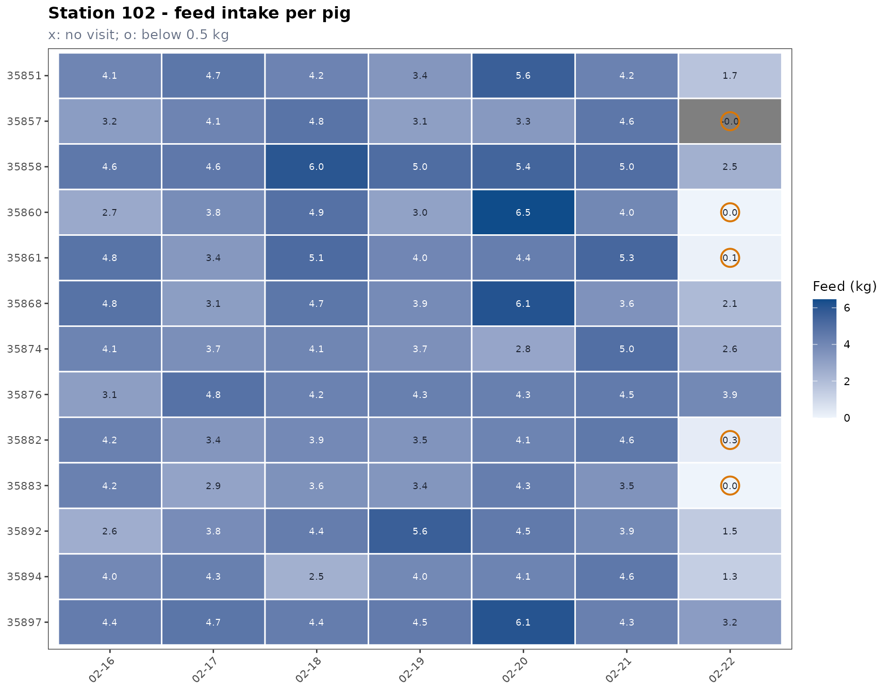
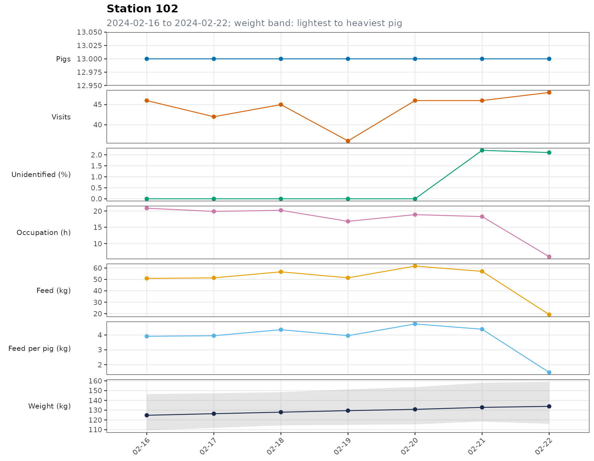

library(tidypptsdm)
mon <- run_monitor(tidypptsda::fire, days = 7, verbose = 0)所有日表都有一个共同点：窗口内每个单位每天都有一行，没有访问的日子也在，计数为
0、其他列为
NA。停机的测定站、不吃料的猪因此不会从表中”消失”。
列名的后缀就是单位：_kg 千克、_h
小时、_min 分钟、pct_ 百分比、n_
计数。
stations
head(mon$stations)
#> location date n_pigs n_visits n_unidentified pct_unidentified
#> <char> <Date> <int> <int> <int> <num>
#> 1: 101 2024-02-16 12 90 0 0.0
#> 2: 101 2024-02-17 12 78 0 0.0
#> 3: 101 2024-02-18 12 54 0 0.0
#> 4: 101 2024-02-19 12 49 0 0.0
#> 5: 101 2024-02-20 12 61 1 1.6
#> 6: 101 2024-02-21 12 54 0 0.0
#> occupation_h feed_kg feed_per_pig_kg weight_kg pct_weight_outlier
#> <num> <num> <num> <num> <num>
#> 1: 15.01 41.358 3.446 112.90 9.4
#> 2: 15.53 42.995 3.583 114.62 5.2
#> 3: 13.56 48.809 4.067 114.97 3.8
#> 4: 11.99 45.895 3.825 117.08 2.1
#> 5: 13.42 49.421 4.118 118.91 1.7
#> 6: 12.57 45.630 3.803 119.58 3.7| 列 | 含义 |
|---|---|
location、date
|
测定站、日期 |
n_pigs |
当天有识别访问的猪数 |
n_visits |
全部访问次数（含未识别） |
n_unidentified、pct_unidentified
|
未读到耳标的访问次数及其百分比 |
occupation_h |
测定站被占用的总时间，小时 |
feed_kg |
全部访问的采食量，kg |
feed_per_pig_kg |
识别访问的采食量 ÷ n_pigs
|
weight_kg |
每头猪当天体重中位数（去掉异常值）的平均 |
pct_weight_outlier |
体重异常值的百分比：同一头猪同一天的体重，超出四分位数 ±
iqr_k × 四分位距（Tukey fences）的记录；少于 4
次称重时不判异常 |
列出的测定站是窗口内或窗口前 14 天内有访问的测定站：停止记录的测定站会显示两周（并报警），早已撤出测定的则不再列出。
houses
栋由测定站编号的前 house_width 个字符决定，例如
house_width = 1 时测定站 203 属于栋
2。
head(mon$houses)
#> house date n_stations n_pigs n_visits feed_kg feed_per_pig_kg
#> <char> <Date> <int> <int> <int> <num> <num>
#> 1: 1 2024-02-16 2 25 136 92.257 3.690
#> 2: 1 2024-02-17 2 25 120 94.368 3.775
#> 3: 1 2024-02-18 2 25 99 105.488 4.220
#> 4: 1 2024-02-19 2 25 85 97.304 3.892
#> 5: 1 2024-02-20 2 25 107 111.142 4.446
#> 6: 1 2024-02-21 2 25 100 102.731 4.109
#> weight_kg
#> <num>
#> 1: 119.13
#> 2: 120.74
#> 3: 121.71
#> 4: 123.54
#> 5: 125.06
#> 6: 126.45n_stations 是该栋的测定站数，其余列与
stations 相同。
pigs 和 pig_summary
pigs
每头猪每天一行，从这头猪第一次出现（或窗口开始）到窗口最后一天：
head(mon$pigs)
#> location responder date n_visits feed_kg occupation_min weight_kg
#> <char> <char> <Date> <int> <num> <num> <num>
#> 1: 101 25822 2024-02-16 5 2.850 56.6 116.8
#> 2: 101 25822 2024-02-17 6 2.914 57.2 117.8
#> 3: 101 25822 2024-02-18 4 3.980 60.5 118.5
#> 4: 101 25822 2024-02-19 4 3.227 46.7 120.9
#> 5: 101 25822 2024-02-20 6 2.056 36.2 121.9
#> 6: 101 25822 2024-02-21 5 3.091 48.5 118.6
#> status
#> <char>
#> 1: ok
#> 2: ok
#> 3: ok
#> 4: ok
#> 5: ok
#> 6: ok| 列 | 含义 |
|---|---|
location |
窗口内这头猪访问最多的测定站 |
n_visits、feed_kg、occupation_min
|
当天的访问次数、采食量、占用时间（分钟） |
weight_kg |
当天体重的中位数 |
status |
no_visit（无访问）、low_feed（采食量 <
low_feed_kg）或 ok
|
pig_summary 每头猪一行：
head(mon$pig_summary)
#> location responder days no_visit_days low_feed_days mean_feed_kg
#> <char> <char> <int> <int> <int> <num>
#> 1: 101 25822 7 0 0 2.703
#> 2: 101 35853 7 0 0 4.028
#> 3: 101 35855 7 0 0 4.736
#> 4: 101 35862 7 0 0 3.610
#> 5: 101 35865 7 0 0 3.500
#> 6: 101 35869 7 0 0 3.397
#> last_feed_kg last_visits last_weight_kg days_since_visit status
#> <num> <int> <num> <int> <char>
#> 1: 0.801 5 119.1 0 ok
#> 2: 2.618 5 131.4 0 ok
#> 3: 2.188 2 139.3 0 ok
#> 4: 1.304 1 124.2 0 ok
#> 5: 1.707 3 125.1 0 ok
#> 6: 2.710 5 99.6 0 ok| 列 | 含义 |
|---|---|
days |
窗口内的天数（从第一次出现算起） |
no_visit_days、low_feed_days
|
无访问、低采食的天数 |
mean_feed_kg |
平均日采食量，无访问的日子按 0 计 |
last_feed_kg、last_visits
|
最后一天的采食量、访问次数 |
last_weight_kg |
最近一次的日体重中位数 |
days_since_visit |
距上次访问的天数 |
status |
最后一天的状态 |
hours
最后一天（或 monitor_hours(date = )
指定的一天）每台测定站 0–23
时每小时一行：n_pigs、n_visits、occupation_min、feed_kg。小时按进站时间计。
alerts
mon$alerts
#> level type location responder value
#> <char> <char> <char> <char> <num>
#> 1: warning feed_drop 101 <NA> 24.660
#> 2: warning feed_drop 102 <NA> 19.167
#> 3: warning pig_low_feed 102 35857 -0.012
#> 4: warning pig_low_feed 102 35860 0.006
#> 5: warning pig_low_feed 102 35861 0.096
#> 6: warning pig_low_feed 102 35882 0.300
#> 7: warning pig_low_feed 102 35883 0.004
#> message
#> <char>
#> 1: Feed intake 24.7 kg, 46% below the mean of the earlier days (45.7 kg)
#> 2: Feed intake 19.2 kg, 65% below the mean of the earlier days (54.9 kg)
#> 3: Ate -0.01 kg (below 0.5 kg); 1 low-feed day in the window
#> 4: Ate 0.01 kg (below 0.5 kg); 1 low-feed day in the window
#> 5: Ate 0.10 kg (below 0.5 kg); 1 low-feed day in the window
#> 6: Ate 0.30 kg (below 0.5 kg); 1 low-feed day in the window
#> 7: Ate 0.00 kg (below 0.5 kg); 1 low-feed day in the window| 列 | 含义 |
|---|---|
level |
danger 或 warning，danger 排在前面 |
type |
station_down、unidentified、feed_drop、pig_no_visit、pig_low_feed
|
location、responder
|
测定站；猪只警报还有耳标号 |
value |
触发的数值：未识别百分比、采食量 kg、无访问天数 |
message |
说明 |
阈值都是 run_monitor()
的参数：low_feed_kg、max_unidentified_pct、max_feed_drop_pct、iqr_k。
plot_monitor(type = ) |
内容 |
|---|---|
"trend" |
猪数、访问次数、未识别 %、占用时间、采食量、头均采食量和体重的逐日变化。体重线是各猪当天体重中位数的平均，灰色带是当天最轻到最重的猪；无访问的日子标红 |
"intake" |
堆叠柱状图，每头猪一种颜色：上图为每头猪占测定站当天总采食量的比例（%），下图为采食量（kg），柱顶标出当天总量（窗口不超过
31 天时）。最后一天没有访问或采食量偏低的猪，在图例中标
[no visit]、[low feed]
|
"weight" |
每天全部体重记录的箱线图，红点在须线以外 |
"hours" |
最后一天每小时的访问次数、占用时间、采食量 |
plot_monitor(mon, "intake", locations = "102")$plot[[1]]
plot_monitor(mon, "trend", locations = "102")$plot[[1]]
write_monitor_tables(mon, path) 写出
monitor.xlsx（需要 openxlsx 包）。长表原样写出，宽表（见
wide_table()）加三色色阶：红色表示可能有问题。
| 工作表 | 内容 | 红色表示 |
|---|---|---|
Alerts |
警报 | |
Stations、Houses、Pigs、Pig days
|
长表（Pigs 是
pig_summary，Pig days 是
pigs） |
|
Visits |
每站每天访问次数 | 偏低 |
Unidentified pct |
未识别访问 % | 偏高 |
Feed kg、Feed per pig kg
|
采食量、头均采食量 | 偏低 |
Occupation h |
占用时间 | 偏低 |
Weight outliers pct |
体重异常值 % | 偏高 |
House feed per pig kg |
每栋头均采食量 | 偏低 |
House weight kg |
每栋平均体重 | （蓝色色阶） |
Pig feed kg |
每头猪每天采食量 | 偏低 |
Hours visits、Hours feed kg
|
最后一天每小时 | （蓝色色阶） |
format = "csv" 则写出 6 个 CSV
文件（monitor_alerts.csv 等），带 BOM，Excel
直接打开不会乱码。